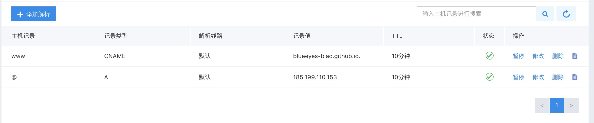

前言
一年前就准备了个域名想搭建个个人博客，但是由于工作比较忙，最后也没时间来做这个东西，最近项目都差不多结束了，这一闲下来就容易瞎想，突然想到作为一名程序猿竟然没有自己的博客是不是有点栽面，然后就开始动手搭建了自己的博客。
刚刚搭好博客还不知道写点啥，干脆趁热打铁将搭建的过程拿出来跟大家分享一下，供大家参考，同时纪念一下我的第一篇文章。
兄dei，来想一想等搭建完了给那些不太了解这方面的朋友看一下，是不是瞬间感觉这一块那一块方方面面的牌面就上来了。如果你也想这么有牌面儿的话，那么就跟着下面的步骤一步一步来，看完以后你也可以轻易的做到。
由于博主用的是mac，所以具体步骤中都以mac为基础进行说明。如果在操作过程中各位小伙伴有什么问题的话可以加我QQ，我可以协助你，QQ：1129306017。
好了话不多说，咱们直接步入正题。
###1.准备环境
1.安装node
2.注册github账户，配置仓库
3.安装和配置Git
4.购买域名(可买可不买)
###2.安装Hexo
###3.Hexo初体验
###4.部署到github
##1.环境准备
安装node
大家根据自己的操作系统去下载对应版本的node
下载地址：http://nodejs.cn/download/
下载好以后双击.pkg文件按照提示安装即可，安装完毕以后可以用以下命令进行验证是否安装成功。
1
2
1. node -v
2. npm -v
首先打开终端，mac用户可以按住command+空格，输入Terminal.app；window用户按住win+r ，输入cmd。

如果你输入完命令也会出现版本信息，那么恭喜你，node安装成功了。
注册github账户，配置仓库
注册直通车：https://github.com/
兄dei，很简单，不用担心！
ok！注册完了我们就要进行下一步操作了，配置仓库。
注意：下图中绿色框中和红色框保持一致，都填完以后点击Create repository即可
如果你也出现了下图，那么恭喜你，离成功又进了一步。

安装和配置Git
下载自己系统对应的版本即可：https://git-scm.com/downloads
同样按照提示一步一步的安装，然后运行下面的命令，如果出现版本信息，那么就代表安装成功
1
git --version
接下来我们主要说一下生成和添加ssh key
设置Git的username和email(不要直接复制粘贴代码，记得改一下email和name)
1
2
1. git config --global user.name "your_name"
2. git config --global user.email "your_email@gmail.com"
生成秘钥
1
ssh-keygen -t rsa -C "your_email@youremail.com"
远端仓库添加密钥
首先针对mac的兄dei，打开终端运行下面的代码就复制成功
1
pbcopy < ~/.ssh/id-rsa.pub
window的兄dei可以打开我的电脑->C盘->用户->Administrator->.ssh->id-rsa.pub，用记事本打开复制里面的内容即可。
接下来是去远端仓库添加秘钥
打开github，点击自己的头像位置，会弹出下拉菜单，点击Settings，如下图：

然后点击SSH and GPG keys ，SSH and GPG keys

将刚才复制的内容粘贴到红框中，title自己随便写一个就行，然后点击Add SSH key，这样就添加完成了

购买域名(可买可不买)
我是在百度云买的，在哪里买都可以，买域名很简单，选好自己想要的，下单就ok，这里就不赘述了。
##2.安装Hexo
首先找一个你觉得合适的地方建一个文件夹，我们可以称之为Hexo
windows的用户点击进入文件夹然后在空白位置右击，选择Git Bash
mac用户如果你不是程序员的话，我建议你直接在桌面建一个文件夹就好了，然后打开Terminal.app，输入cd Desktop/Hexo/
接下来在命令行中输入
1
npm i hexo -g
这样就会自动去安装hexo了，等安装完毕后输入hexo -v，看是否能出现版本号等信息
##3.Hexo初体验
- 好了，接下来我们体验下Hexo
1
hexo init
如果你和下图一样，那么恭喜你init成功

接下来按照顺序输入
1
2
3
4
5
npm install
hexo g
hexo s

输入完毕后如下图，去打开浏览器，在地址栏，输入localhost:4000，意想不到的事情就发生了，快看看你的是不是也跟我这个一样呢。

##4.部署到github
首先我们需要配置一下项目链接，打开项目所在目录，目录下有个名为_config.yml的文件，用编辑器打开即可，没有编辑器的用记事本打开也行。
拖到文件末尾配置一下deploy
1
2
3
4deploy:
type: git
repository: https://github.com/BlueEyes-biao/BlueEyesbiao.github.io.git
branch: masterrepository字段需要填写自己的项目地址，项目地址可以根据下图提示，进行查找，首先打开github。
将复制的项目仓库地址，替换repository即可
接下来只需要在命令行中输入
1
2
3
4
5npm install hexo-deployer-git --save
hexo g
hexo d这样就部署到了github上面，你可以在浏览器中输入https://yourName.github.io(我的是https://BlueEyesbiao.github.io)
下面这部分是针对已经购买域名的兄dei，怎么讲域名和github绑定，从而可以通过访问你的域名来查看你的博客。
在项目目录中新建一个文件，起名为CNAME，注意这里不可以有后缀，用记事本打开这个文件，将你购买的域名写入保存。
接下来是解析你的域名：
按照博主这样添加解析就可以了

可能你不知道ip是多少，你可以在终端中输入
1
ping yourname.github.io
红框内即为你项目的服务器ip
然后打开github 找到你的项目点击setting

找到github page，讲你的域名写入，然后save就ok了
接下来你就可以直接打开你的域名，你的私人博客也就搭建完毕了，可以拿去装13了。
###怎么样兄dei，是不是很简单，搭建私人博客就是这么简单。本文只是一个入门学习文章，如果你想了解更多的话，可以收藏本网站。